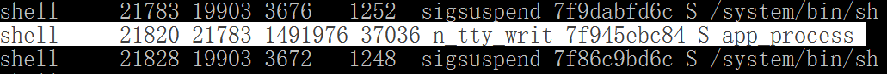
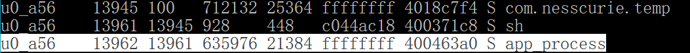

在Android设备上运行纯java代码
CommentAndroid通过java虚拟机实现运行每个app,不过Android的应用程序都是运行在Context上下文环境中的,从没在Android应用的代码中看到main方法,那普通的java程序如何在Android中运行.
google对java虚拟机进行了修改,只能运行将所有.class文件转为为一个.dex的文件,在Android的dalvik和ART虚拟机上无法直接运行.class文件,但是Google提供了将.class转为dex的工具 – dx
- 老版本的sdk存放在SDK\platform-tools下
- 新的sdk存放在SDK\build-toolsx\xx.xx(版本号)下
dx并没有配置到环境变量中,需要到对应目录下输入命令行.
首先随便编写一个简单的普通java代码,比如HelloWorld.java,因为没法看到图形化的界面,其中需要一条输出语句分辨程序是否有执行.
javac编译为HelloWorld.class或使用IDE运行一下生成.class文件.
在dx的目录打开cmd dx --dex --output=(输出路径) (.class文件路径)
比如: dx --dex --output=D:\Hello.dex HelloWorld.class
这时可能出现以下2个错误:
第一个:
1 | PARSE ERROR: |
version 52.0是指java8,AS都支持了java8了,并且dx的版本也是新版sdk最新的Platform tool,这个dx居然还不支持,和dx同路径的runtime.properties文件里面指定Runtime.Jvm=1.6,但是用1.7编译的.class是可以的,修改配置文件也无效,不是太清楚是怎么回事.
该错误可以在javac命令时使用指定版本:
javac -source 1.7 -target 1.7 (.class的绝对路径)
会有一个警告,不用理会即可
第二个:
1 | PARSE ERROR: |
这里在输入.class的路径时,直接从桌面上拖到cmd上输入了绝对路径,dx的.class文件不支持绝对路径,只能放到dx目录下,使用相对路径.
解决方式:放到dx目录里面就好了…
找到生成的Hello.dex文件,需要push手机中,没有root的手机有权限push进去的目录找了几个就只有/data/local/tmp,root了的手机push到任意目录即可.
这里以data/local/tmp为例:
adb push Hello.dex /data/local/tmp
adb shell
cd到push的dex文件的目录: cd /data/local/tmp
app_process的运行命令格式为:
app_process [vm-options] cmd-dir [options] start-class-name [main-options]
即:app_process VM选项 (路径名) (类名)
比如:app_process -Djava.class.path=Hello.dex /data/local/tmp HelloWorld
可以看到cmd输出了一句:HelloWorld,到这一步,就成功的在Android上运行了纯java文件.
修改helloworld为死循环一直输出helloworld,重复上面的步骤,运行Hello.dex.
再次打开一个cmd,adb shell后ps查看当前运行的进程,经过对比可以看到运行起来的程序进程为app_process.

通过命令行启动的进程USER为shell,shell有比较高的权限的.
不过也只有通过命令行启动的情况才是shell,如果在应用中运行命令行启动外部的纯java程序的dex,启动的应用USER是和当前启动它的应用的USER一样的.
运行cmd的工具类可以使用Trinea的ShellUtils,具体可以查看: Trinea的ShellUtils介绍
使用ShellUtils在应用中启动java程序:
1 | String s1 = "cd /data/local/tmp"; |

可以看到USER和启动它的应用一样,这时候并没有很高的权限.